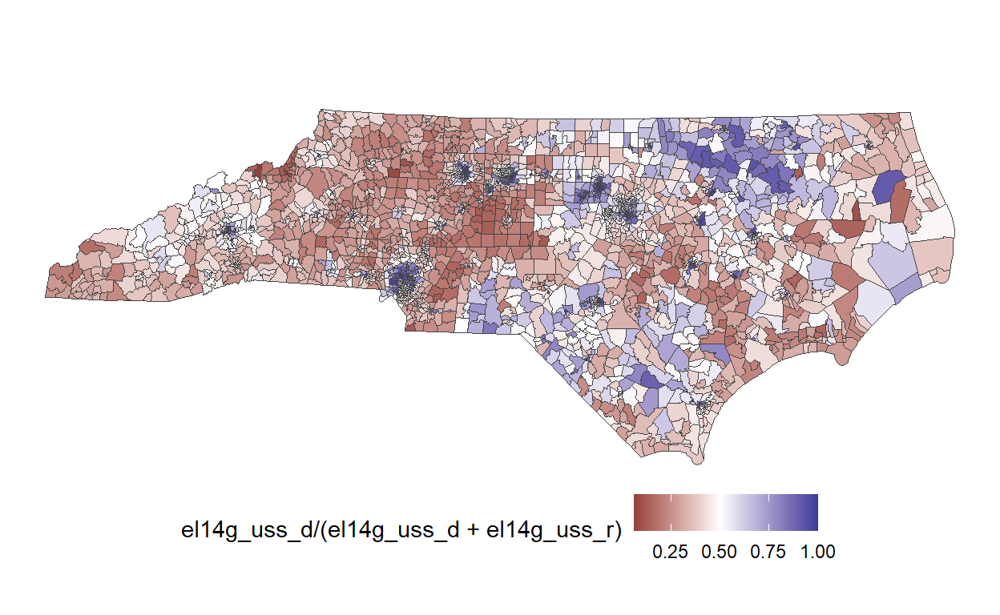
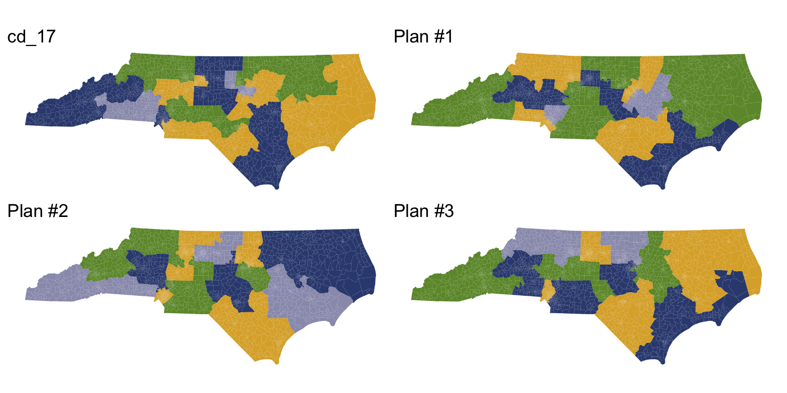
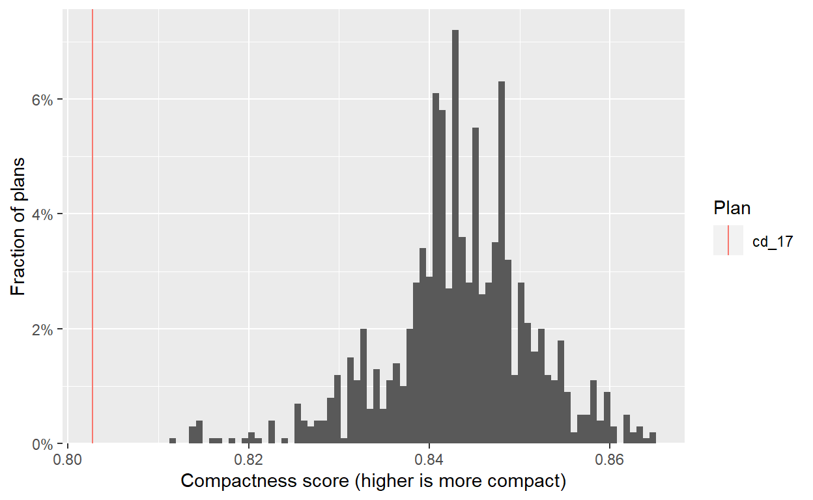
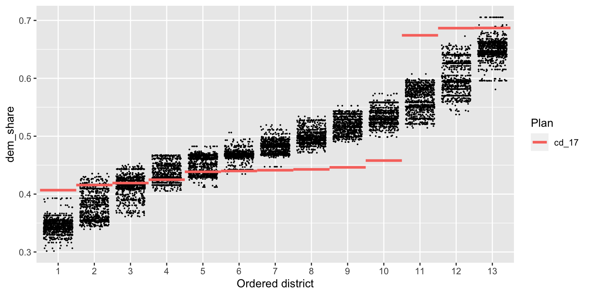
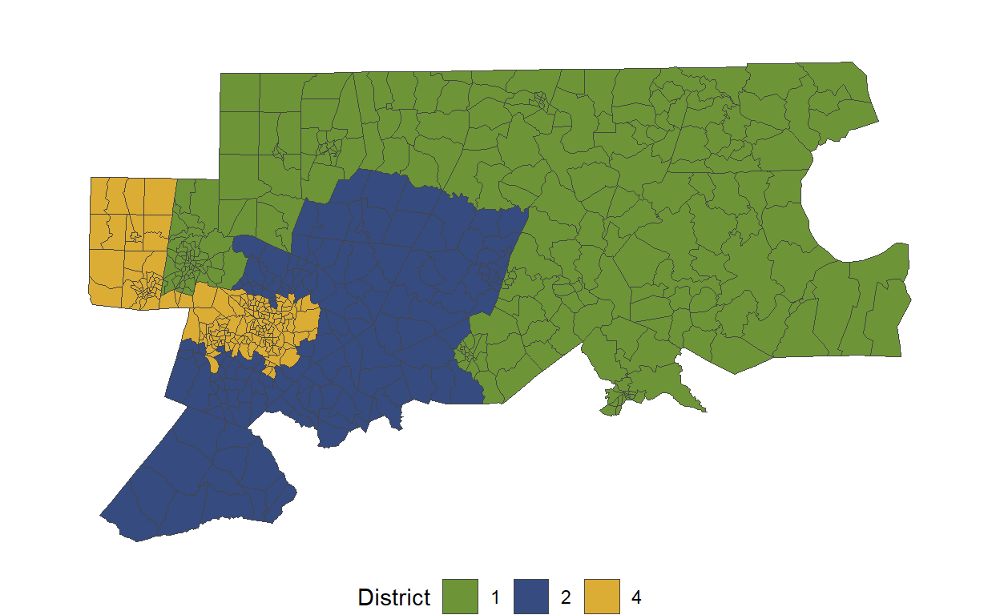
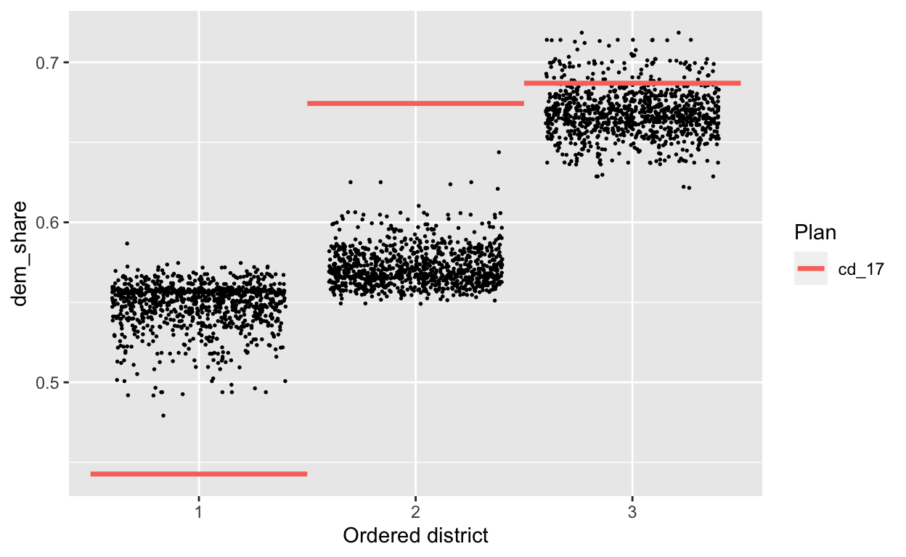
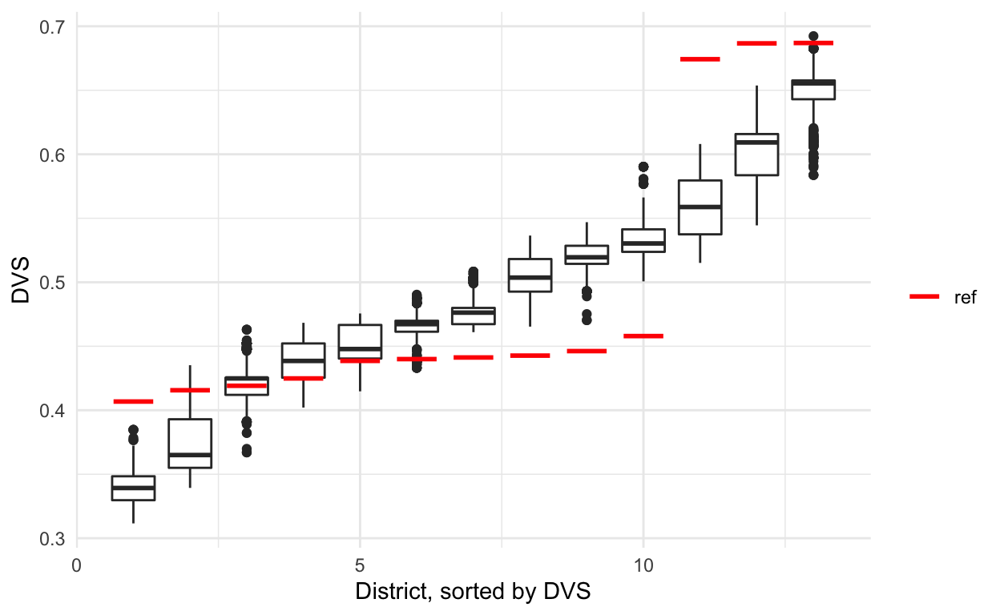
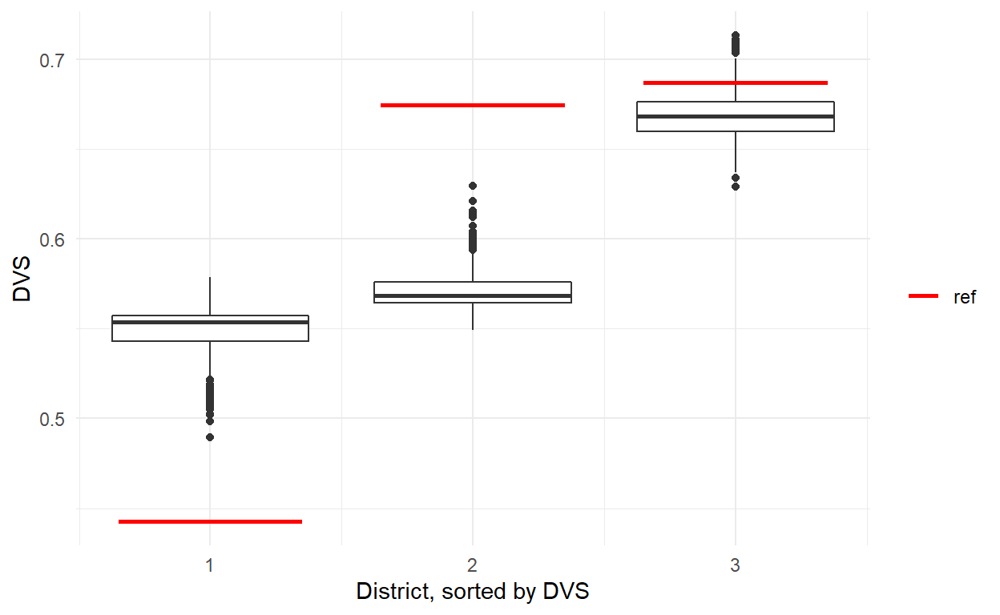

The ALARM Project is excited to announce the release of redist 3.0.0. This release brings with it new algorithms and major new workflow improvements, making redistricting analysis broadly accessible to data scientists everywhere.

New Features
This release includes far too many changes to list comprehensively. Key improvements and new features include:
- New tidy interface, including new
redist_mapandredist_plansobjects - Merge-split MCMC now available in
redist_mergesplit() - Short burst MCMC optimization now available in
redist_shortburst()along with scoring functions - Improved Flip MCMC interface and performance improvements
- New support for larger simulation size limits
- Functions to freeze parts of a map and extract district cores
- New VRA constraint
- Many new plotting functions
- Consistent function and argument names
- New partisanship and compactnes metrics
- Performance improvements to compactness calculations
- Plan comparison and classification in
compare_plans()andclassify_plans() - New p
iowa](/redist/reference/iowa.html) dataset and cleaned-up package data
To begin exploring the new features, check out the new Get Started vignette.
Workflow Example: North Carolina
To demonstrate the new redist workflow, we’ll run through a basic analysis of the 2017 congressional districts of the state of North Carolina, which were struck down as an unconstitutional partisan gerrymander in 2019.
New workflow
Under the new workflow, a redistricting analysis begins with a redist_map object, which defines the basic parameters of the redistricting problem. The redist_map() constructor builds the precinct adjacency graph which is required for redistricting simulation, and stores relevant metadata, such as the desired population parity tolerance and a reference to the existing districts. It also comes with helpful plotting functions.
nc = redist_map(nc_shp, existing_plan=cd_17, pop_tol=0.01)
print(nc)
A redist_map object with 2692 units and 15 fields
To be partitioned into 13 districts with population between 733,498.7 - 1.0% and 733,498.7 + 1.0%
With geometry:
bbox: xmin: 406819.6 ymin: 2696.2 xmax: 3070217 ymax: 1043629
projected CRS: NAD83(HARN) / North Carolina (ftUS)
# A tibble: 2,692 x 15
vtd county pop vap el14g_uss_r el14g_uss_d el14g_uss_l
* <chr> <chr> <int> <int> <int> <int> <int>
1 3700106W 37001 1973 1505 181 182 17
2 3700112E 37001 3391 2503 180 271 21
3 3700112W 37001 2744 2156 457 481 42
4 3700106N 37001 4468 3167 231 466 31
5 37001126 37001 2038 1713 670 416 38
6 37001124 37001 2455 1948 491 391 33
7 370011210 37001 2802 2127 358 309 31
8 3700103N 37001 5712 4955 1063 853 53
9 3700102 37001 4491 3483 1246 313 62
10 3700106E 37001 3113 2371 423 432 42
# ... with 2,682 more rows, and 8 more variables: el14g_uss_wi <int>,
# el14g_uss_tot <int>, cd_13 <int>, cd_17 <int>, aland10 <dbl>,
# awater10 <dbl>, geometry <MULTIPOLYGON [US_survey_foot]>,
# adj <list>plot(nc, el14g_uss_d/(el14g_uss_d+el14g_uss_r)) +
scale_fill_gradient2(midpoint=0.5)

Once we’ve created a redist_map object, we can simulate redistricting plans.
plans = redist_smc(nc, 1000, counties=county, silent=TRUE) # 1000 plans
print(plans)
1000 sampled plans and 1 reference plan with 13 districts from a 2692-unit map,
drawn using Sequential Monte Carlo
With plans resampled from weights
Plans matrix: num [1:2692, 1:1001] 6 6 6 6 6 6 6 6 6 6 ...
# A tibble: 13,013 x 3
draw district total_pop
<fct> <int> <dbl>
1 cd_17 1 733323
2 cd_17 2 734740
3 cd_17 3 732627
4 cd_17 4 733218
5 cd_17 5 733879
6 cd_17 6 733554
7 cd_17 7 734750
8 cd_17 8 734777
9 cd_17 9 731507
10 cd_17 10 736057
# ... with 13,003 more rowsThe plans variable is a redist_plans object—a special container designed to make handling sets of redistricting plans painless. As the output above shows, plans contains the 1,000 samppled plans, plus the 2017 congressional districts. We can plot a few of these plans.
redist.plot.plans(plans, draws=c("cd_17", "1", "2", "3"), geom=nc)

A redist_plans object makes it easy to compute plan and district summary statistics.
plans = plans %>%
mutate(comp = distr_compactness(nc),
dem_share = group_frac(nc, el14g_uss_d, el14g_uss_d + el14g_uss_r))
print(plans)
1000 sampled plans and 1 reference plan with 13 districts from a 2692-unit map,
drawn using Sequential Monte Carlo
With plans resampled from weights
Plans matrix: num [1:2692, 1:1001] 6 6 6 6 6 6 6 6 6 6 ...
# A tibble: 13,013 x 5
draw district total_pop comp dem_share
<fct> <int> <dbl> <dbl> <dbl>
1 cd_17 1 733323 0.803 0.687
2 cd_17 2 734740 0.803 0.443
3 cd_17 3 732627 0.803 0.407
4 cd_17 4 733218 0.803 0.674
5 cd_17 5 733879 0.803 0.425
6 cd_17 6 733554 0.803 0.441
7 cd_17 7 734750 0.803 0.446
8 cd_17 8 734777 0.803 0.439
9 cd_17 9 731507 0.803 0.440
10 cd_17 10 736057 0.803 0.419
# ... with 13,003 more rowsFrom there, we can quickly generate informative plots. First we check the compactness of the generated plans, and see that they are significantly more compact than the adopted 2017 plan.
hist(plans, comp) +
labs(x="Compactness score (higher is more compact)")

Next, we look at the partisan implications of the 2017 plan. We plot the two-party Democratic vote share in each district, with districts sorted by this quantity. Each dot on the plot below is a district from one simulated plan, and the red lines show the values for the 2017 plan.
redist.plot.distr_qtys(plans, dem_share, size=0.1)

We see immediately that the 2017 plan packs Democratic voters into the three most Democratic districts, and cracks them in the remaining 10 districts, leading to a durable 10–3 Republican-Democratic seat split (in an election which Democrats captured 49% of the statewide two-party vote). A clear partisan gerrymander.
Studying districts 1, 2, and 4
If we want to study a specific set of districts, we can quickly filter() to the relevant map area and re-run the analysis. The redist_map() object will handle all appropriate adjustments to the adjacency graph, number of districts, and population tolerance (as is visible below).
A redist_map object with 571 units and 15 fields
To be partitioned into 3 districts with population between 733,760.3 - 1.035301% and 733,760.3 + 0.9639859%
With geometry:
bbox: xmin: 1921644 ymin: 524882.4 xmax: 2784102 ymax: 1028248
projected CRS: NAD83(HARN) / North Carolina (ftUS)
# A tibble: 571 x 15
vtd county pop vap el14g_uss_r el14g_uss_d el14g_uss_l
* <chr> <chr> <int> <int> <int> <int> <int>
1 37015C2 37015 2182 1707 174 503 13
2 37015M1 37015 1103 849 172 167 5
3 37015C1 37015 1229 986 229 184 11
4 37015MH 37015 992 811 146 254 12
5 37015W2 37015 966 764 286 47 20
6 37015W1 37015 7005 5703 596 1190 44
7 37015M2 37015 1290 983 99 239 16
8 37015SN 37015 1410 1025 63 327 11
9 37015WH 37015 1554 1274 292 262 12
10 37015WD 37015 1409 1050 35 319 5
# ... with 561 more rows, and 8 more variables: el14g_uss_wi <int>,
# el14g_uss_tot <int>, cd_13 <int>, cd_17 <int>, aland10 <dbl>,
# awater10 <dbl>, geometry <MULTIPOLYGON [US_survey_foot]>,
# adj <list>plot(nc_sub)

On this subset, too, the adopted 2017 plan is a significant outlier.
plans_sub = redist_smc(nc_sub, 1000, counties=county, silent=T) %>%
mutate(dem_share = group_frac(nc_sub, el14g_uss_d, el14g_uss_d + el14g_uss_r))
redist.plot.distr_qtys(plans_sub, dem_share, size=0.3)

Old workflow
In comparison, the old workflow required significantly more steps and manual processing.
adj <- redist.adjacency(nc_shp)
redist_map objects keep track of the adj, total_pop, ndists, and pop_tol arguments, but in the older version, you had to specify each of these for every simulation. One of the quirky aspects of the older version was that counties needed to be a vector with values 1:n_counties, meaning that you had to manually transform it to use it and that only worked if the counties were contiguous.
sims <- redist.smc(adj = adj, total_pop = nc_shp$pop, ndists = 13, pop_tol = 0.01,
counties = match(nc_shp$county, unique(nc_shp$county)), nsims = 1000,
silent = TRUE)
metrics <- redist.metrics(plans = sims$plans, measure = 'DVS', rvote = nc_shp$el14g_uss_r, nc_shp$el14g_uss_d)
sorted <- metrics %>%
group_by(draw) %>%
arrange(DVS,.by_group = TRUE) %>%
mutate(district = 1:13) %>%
ungroup()
reference_metrics <- redist.metrics(plans = nc_shp$cd_17, measure = 'DVS', rvote = nc_shp$el14g_uss_r, dvote = nc_shp$el14g_uss_d)
sorted_reference <- reference_metrics %>% arrange(DVS) %>% mutate(district = 1:13)
sorted %>% ggplot(aes(x = district, y = DVS, group = district)) +
geom_boxplot() +
theme_minimal() +
labs(x = 'District, sorted by DVS') +
geom_segment(data = sorted_reference, size = 1,
aes(x = district - 0.35, xend = district + 0.35, yend = DVS, color = 'red')) +
scale_color_manual(name = '', values = c('red' = 'red'),
labels = c('ref'), guide = 'legend')

Studying districts 1, 2, and 4
The steps between loading in data to your first simulation wasn’t terrible in the old version when you were working with the full map. However, when trying to work with subsets, it became messy.
First you needed to subset the shape and then rebuild a new adjacency graph that only had the remaining precincts.sub <- nc_shp %>% filter(cd_17 %in% c(1, 2, 4))
sub_adj <- redist.adjacency(sub)
pop_tol <- 0.01
subparpop <- sum(sub$pop)/3
parpop <- sum(nc_shp$pop)/13
sub_pop_tol <- min(abs(subparpop - parpop * (1 - pop_tol)),
abs(subparpop - parpop * (1 + pop_tol))) / subparpop
sub_pop_tol
[1] 0.009639859sims_sub <- redist.smc(adj = sub_adj, total_pop = sub$pop,
nsims = 1000, ndists = 3, counties = match(sub$county, unique(sub$county)),
pop_tol = sub_pop_tol, silent = TRUE)
sub_metrics <- redist.metrics(plans = sims_sub$plans, measure = 'DVS',
rvote = sub$el14g_uss_r, sub$el14g_uss_d)
sub_sorted <- sub_metrics %>%
group_by(draw) %>%
arrange(DVS,.by_group = TRUE) %>%
mutate(district = 1:3) %>%
ungroup()
sub_reference_metrics <- redist.metrics(plans = match(sub$cd_17, unique(sub$cd_17)),
measure = 'DVS',
rvote = sub$el14g_uss_r, dvote = sub$el14g_uss_d)
sub_sorted_reference <- sub_reference_metrics %>% arrange(DVS) %>% mutate(district = 1:3)
sub_sorted %>% ggplot(aes(x = district, y = DVS, group = district)) +
geom_boxplot() +
theme_minimal() +
labs(x = 'District, sorted by DVS') +
geom_segment(data = sub_sorted_reference, size = 1,
aes(x = district - 0.35, xend = district + 0.35, yend = DVS, color = 'red')) +
scale_color_manual(name = '', values = c('red' = 'red'),
labels = c('ref'), guide = 'legend')
